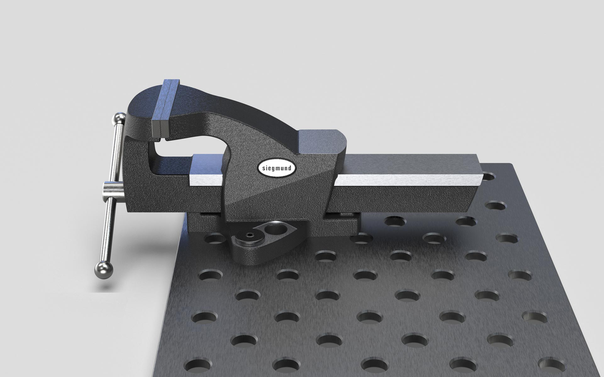
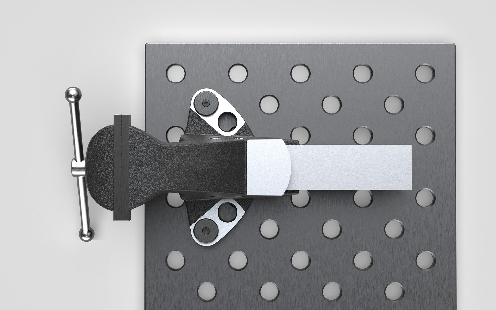
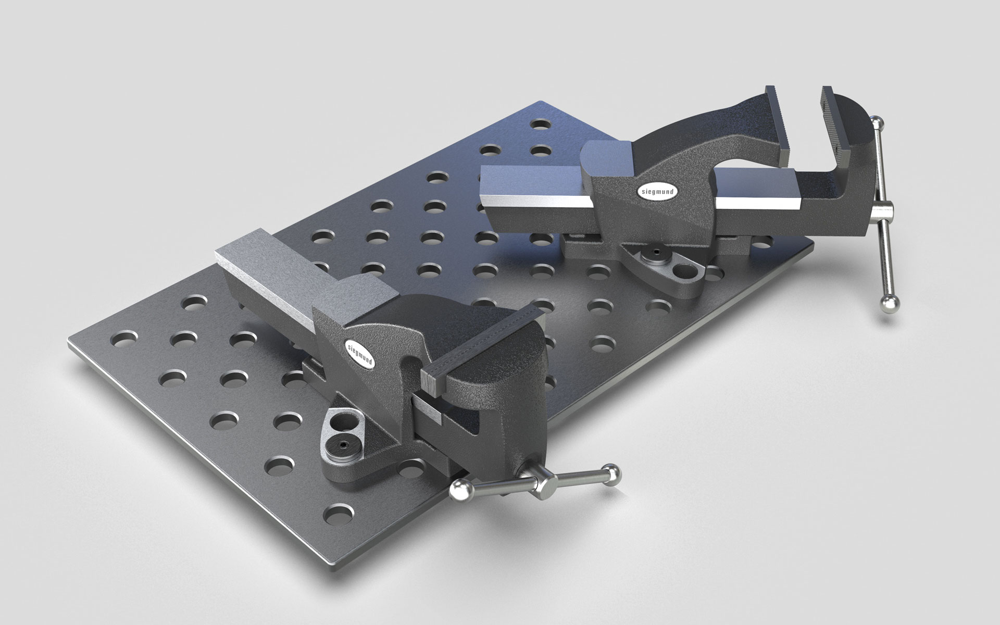
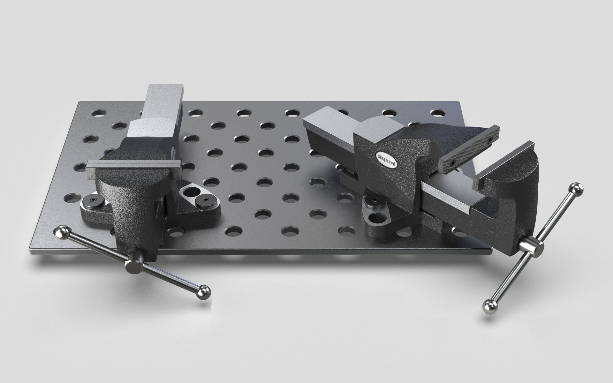

Siegmund Schraubstock
Bench vice
Siegmund Schraubstock
The Siegmund Premium S100, S125 und S150 are classic bench vices with a jaw width of 100mm, 125mm und 150mm which, as a novelty, have a special fastening base.
They are securely and firmly mounted directly on the standardized hole pattern of a workbench or welding
table with just two clamping bolts. A second pair of holes allows additional attachment to the corner edge
of the table rotated by 45°.
Another special feature is that the vice series can be used for both metric and inch hole grid tables
due
to the barely visible elongated holes. The geometry is designed in such a way that even long workpieces
can be clamped vertically past the workbench.
The design emphasizes the robustness and is based directly on the power flow that occurs when clamping
and
processing a workpiece. The screwed clamping jaws can be quickly replaced if damaged. The vises are
versatile and durable products due to their robustness and global design.
Die Siegmund Premium S100, S125 und S150 sind klassische Schraubstöcke mit einer Backenbreite von 100mm, 125mm und 150mm, die als Neuheit über eine spezielle Befestigungsbasis verfügen.
Sie werden mit nur zwei Spannbolzen direkt an der normierten Lochrasterung einer Werkbank oder eines
Schweißtisches sicher und fest montiert. Ein zweites Bohrungspaar ermöglicht eine zusätzliche, um 45° Grad
gedrehte Befestigung an der Tischeckkante.
Eine weitere Besonderheit ist, dass die Schraubstock-Serie aufgrund der kaum sichtbaren Langlöcher neben
metrischen auch für Zoll-Lochrastertische einsetzbar ist. Die Geometrie ist so ausgelegt, dass auch
lange
Werkstücke senkrecht an der Werkbank vorbei eingespannt werden können.
Das Design betont die Robustheit und orientiert sich direkt am Kraftfluss, der beim Spannen und
Bearbeiten
eines Werkstückes entsteht. Die verschraubten Spannbacken können bei einer Beschädigung schnell
getauscht
werden. Die Schraubstöcke sind aufgrund ihrer Robustheit und globalen Auslegung vielseitig einsetzbare
und
langlebige Produkte.




Images © Selić Industriedesign